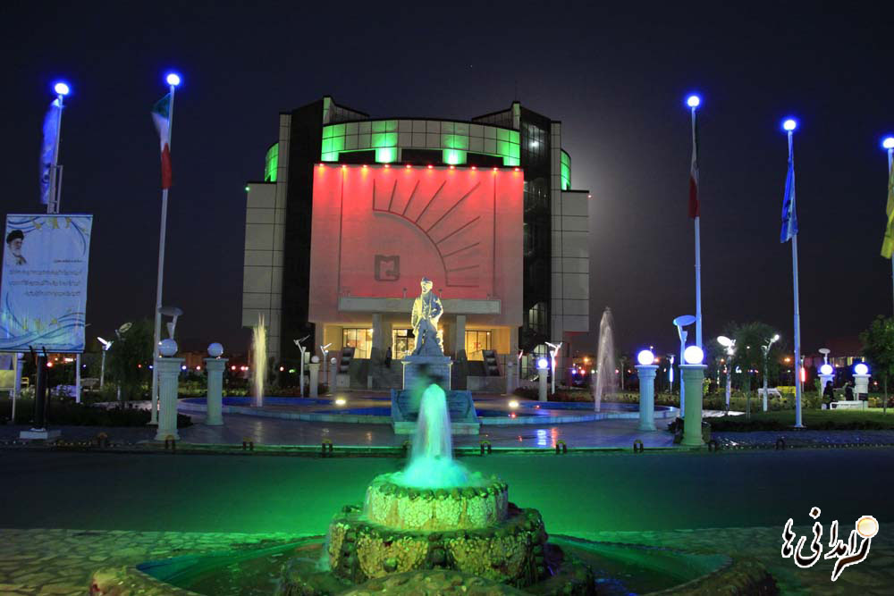

دانشگاه سيستان و بلوچستان به عنوان دانشگاه جامع و قطب علمي منطقه جنوب شرق كشور فعاليت خود را با تاسيس رشته راه و ساختمان در سال ۱۳۵۳ در شهر زاهدان آغاز نمود و به ترتيب در سالهاي ۱۳۵۶ و ۱۳۶۸ دانشكده هاي دريانوردي چابهار، علوم پايه و كشاورزي زابل در اين دانشگاه تاسيس گرديد. در سال ۱۳۷۰ بر اساس مصوبه شوراي گسترش آموزش عالي ، دانش سراي عالي زاهدان با اين دانشگاه ادغام گرديد.
در سالهاي ۱۳۷۷ دانشگاه زابل، ۱۳۸۱ دانشگاه دريانوردي و علوم دريايي چابهار ، ۱۳۸۶ دانشگاه ولايت ايرانشهر و در سال ۱۳۹۱ مرکز آموزش عالی سراوان پس از كسب شاخص هاي لازم از پيكره دانشگاه سيستان و بلوچستان جدا شدند و در قالب دانشگاه ها و مراکز آموزش عالی مستقل به فعاليت خود را ادامه دادند.
دانشگاه سيستان و بلوچستان درسال ۱۳۸۴ به عنوان دانشگاه مادر در استان سيستان و بلوچستان توانست با احراز شاخص هاي لازم به جرگه دانشگاه هاي توسعه يافته كشور بپيوندد و از نظر تشكيلاتي در رديف دانشگاه هاي رده الف كشور قرار گیرد. این دانشگاه در حال حاضر دارای ۱۶دانشکده مصوب است كه از اين تعداد ۱۱ دانشکده و دو پردیس دانشگاهی فعال می باشند که در ۷۰ گروه آموزشی و در سه مقطع دکتری، کارشناسی ارشد و کارشناسی در ۴۱۵ رشته گرایش دانشجو می پذیرند. مساحت کل دانشگاه ۱۹۴ هکتار و زیر بنای مفید آن ۱۸۵۰۰۰ متر مربع است. زیر بنای در حال احداث (با میانگین ۵۰% پیشرفت فیزیکی) ۴۶۲۰۰ متر مربع و دارای بیش از ۸۰ هکتار فضای سبز که بخش عمده ای از سال به عنوان فضای مطالعه رو باز مورد استفاده دانشجویان قرار می گیرد.
سال ۱۳۵۳ تاسیس دانشگاه سیستان و بلوچستان
سال ۱۳۵۶ تاسیس دانشکده دریانوردی چابهار
سال ۱۳۶۲ تاسیس آموزشکده کشاورزی زابل
سال ۱۳۷۰ ادغام با دانشگاه تربیت معلم زاهدان
سال ۱۳۷۷ استقلال دانشگاه زابل
سال ۱۳۸۱ استقلال دانشگاه دریانوردی و علوم دریایی چابهار
سال ۱۳۹۱ استقلال مجتمع آموزش عالی سراوان
دانشکده ها :
دانشکده مهندسی شهید نیکبخت
دانشکده علوم پایه
دانشکده ادبیات و علوم انسانی
دانشکده هنر و معماری
دانشکده مهندسی برق و کامپیوتر
دانشکده علوم تربیتی و روانشناسی
دانشکده الهیات و معارف اسلامی
دانشکده ریاضی
دانشکده جغرافیا و برنامه ریزی محیطی
دانشکده اقتصاد، مدیریت و حسابداری
دانشکده صنعت و معدن خاش
دانشکده کارآفرینی
دانشکده مجازی
دانشکده تربیت بدنی
پردیس بین الملل دانشگاه در چابهار
پردیس زاهدان
پژوهشکده :
پژوهشکده علوم و زمین و جغرافیا
پژوهشکده مطالعات شبه قاره و آسیای جنوبی
پژوهشکده فناوری نانو
مرکز پژوهشی سیستم های فازی
پژوهشکده باستان شناسی
مرکز پژوهشی گیاهان دارویی
مرکز پژوهشی گیاهان زینتی